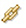

Opening the Situation Event Results Workspace
When the conditions of a situation have been met, event indicators appear in the Navigator and in the graphic view. You can investigate the event by opening its workspace.
-
Open the event results workspace from the event flyover list:
-
In the Navigator or graphic view, move the mouse over the event
indicator (
 Fatal, Critical, Minor, Warning,
Fatal, Critical, Minor, Warning,  Harmless,
Harmless,  Informational, or
Unknown) to open a flyover listing of the
situation that caused the event. The Navigator shows one event indicator
for an item. If more than one situation is true, the event indicator
with the highest severity is displayed. Entries in the event flyover
list are grouped by severity. Each event reports the situation name, the
computer where the event occurred, the two-letter code of the monitoring
agent (such as LX for the Linux OS agent), the event timestamp, and the
display item if one was specified. As well, if any of the following
changes have occurred, a situation status icon displays at the far
right:
Informational, or
Unknown) to open a flyover listing of the
situation that caused the event. The Navigator shows one event indicator
for an item. If more than one situation is true, the event indicator
with the highest severity is displayed. Entries in the event flyover
list are grouped by severity. Each event reports the situation name, the
computer where the event occurred, the two-letter code of the monitoring
agent (such as LX for the Linux OS agent), the event timestamp, and the
display item if one was specified. As well, if any of the following
changes have occurred, a situation status icon displays at the far
right:
Table 1. Event Indicators Event Indicator Description The event has been acknowledged. The acknowledgement has expired. 
The acknowledgement was removed before it had expired and the situation is still true. The situation is not functioning properly and you will not be able to open its event results workspace. 
The situation has been stopped and you will not be able to open its event results workspace. - In the flyover list, click next to the situation to open its event results workspace.
-
In the Navigator or graphic view, move the mouse over the event
indicator (
-
Open the event results workspace from the situation event console view:
- Right-click the row of the event.
- Click Situation Event Results.
| Event Result | Description |
|---|---|
| Initial Situation Values | The values are from the data sample that triggered the event. Move the mouse pointer over a highlighted value to see the situation formula. The value shows as "Unknown" and the formula does not display if the situation expression uses a group function: CHANGE, PCTCHANGE, AVG, COUNT, MIN, MAX or SUM. |
| Current Situation Values | The values are from a new data sample that was taken after you
selected the event results workspace. If the situation is still
true, you will see the same cell highlighting as is shown in the
Initial Situation Values view. If this is a pure event, you will see
no data. This is because pure events are unsolicited notifications.
Situations for pure events have no sampling interval, thus there is
no constant metric that can be monitored for current values. If the expression that is responsible for a situation event uses a group function, the situation event results workspace shows neither the attribute value threshold color nor the expression that should display when you hover over an initial situation value. |
| Command View | Use the command view to send a take action command to an application started on the managed system of your choosing. |
| Expert Advice | If the situation author wrote any expert advice, it is displayed here. This view opens to a web page if the advice is a URL reference. |
You can right-click the situation workspace Navigator item to open the pop-up menu. The menu includes functions for responding to the event:
| Menu Function | Description |
|---|---|
| Edit Situation | Opens the Situation editor so you can see and edit the situation definition, distribution, expert advice, take action command, or until modifier. |
| Acknowledge | Opens the Acknowledgement window so you can acknowledge that you are taking care of the event. |
| If this is a pure event, you will see this option to close the event and remove the event indicator. If the condition goes from true to false and back to true again the next time the situation is evaluated, the indicator will reappear. If the condition remains true, the indicator is not displayed; you must restart the situation if you want to see the indicator. If you close an event manually, you cannot acknowledge it. | |
| Remove Event Item | Removes the event item from the Navigator. To see it again, you must select the true situation from the event flyover list. |
User ID permissions for Events are Acknowledge and Close; and those for Situations include Start or Stop, View, and Modify. If any of these fails to appear in the pop-up menu, your user ID does not have permission for the function.
If you have workspace author mode permission, you can also edit the workspace to add any views that are helpful for diagnosing an event for this particular situation. For example, if historical data is collected for an attribute group, you might want to create a plot chart and add a historical baseline to help to get a broader view of past and current values for trend analysis.